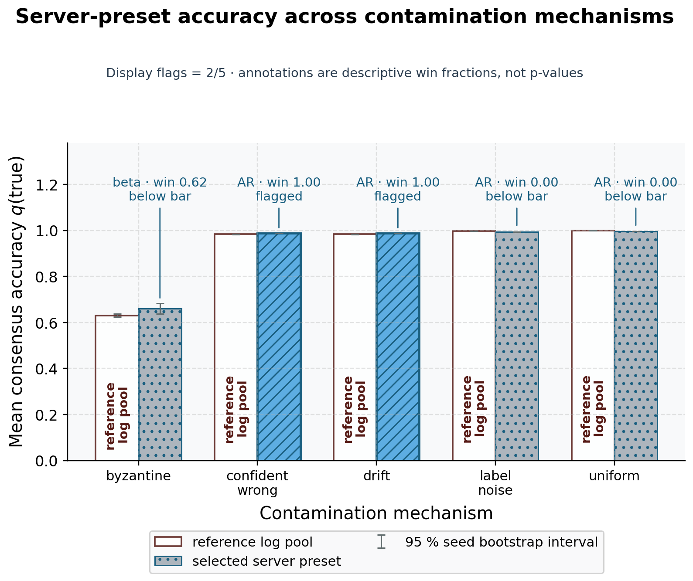
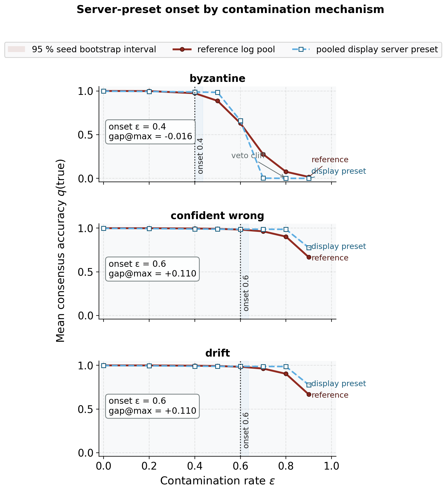
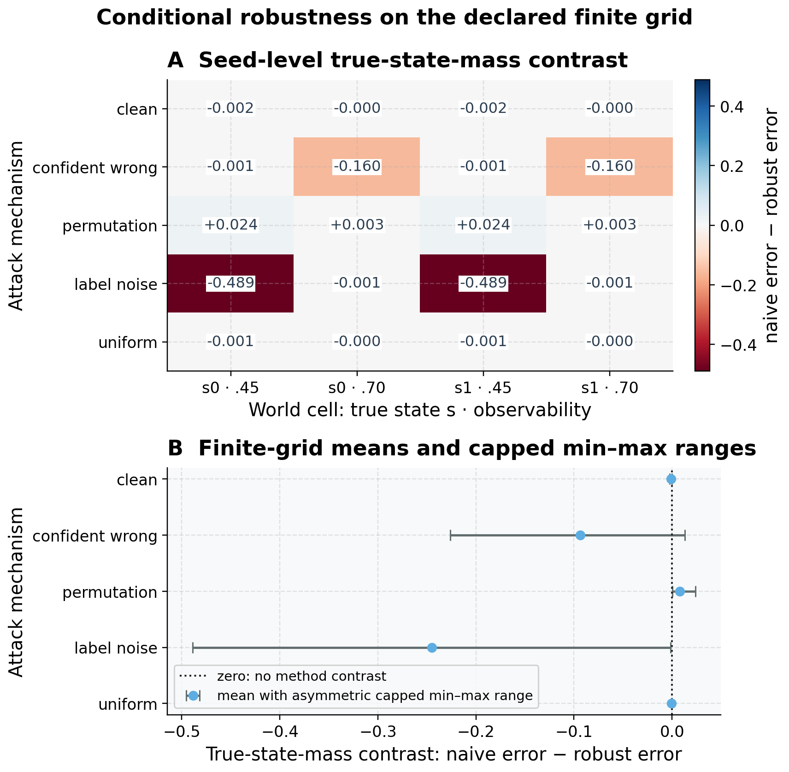
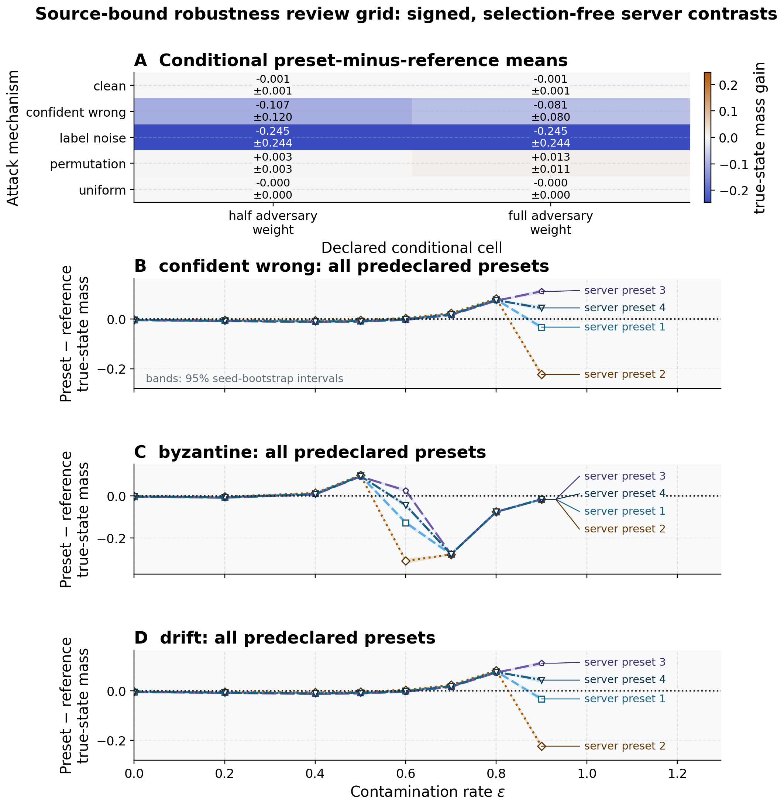
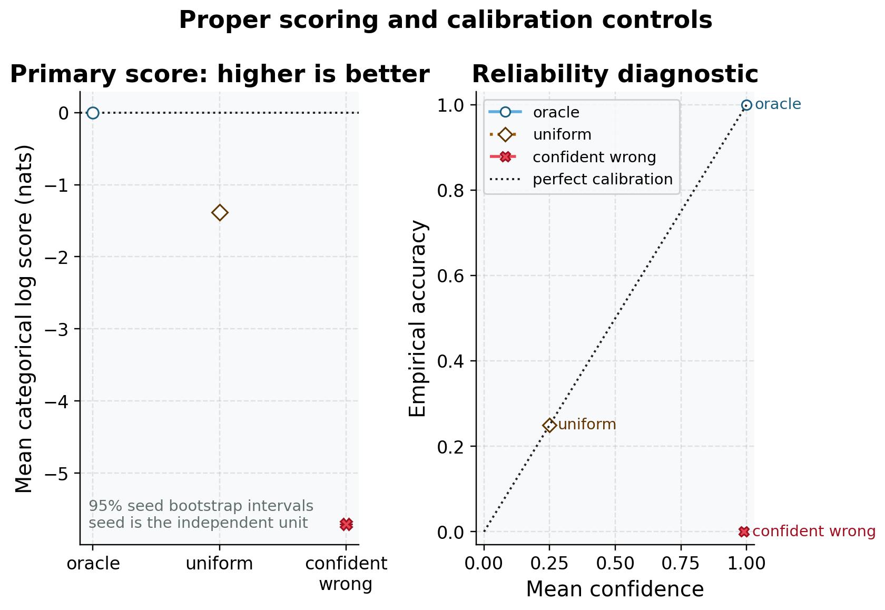

Supplement: extended methods for scoped generalization
This supplement documents three method extensions that broaden the toolkit without changing the categorical federated claims of the main text. Each answers a “does it generalize?” question raised by a specific main-text result and each connects back to it: the additional contamination models, gallery, and onset sweep stress-test the robustness verdict of Section 7.5 beyond its single confident-wrong mechanism; the Gaussian divergence bridge points toward the continuous-state direction of Section 8.22; and greedy multi-hypothesis reduction extends the emergence study of Section 7.4 from one pruned state to a family. Each is tested and isolated; none participates in the headline robustness verdict, so the main-text claims stand or fall without them.
Continuous-state divergence bridge for Gaussian beliefs
Every robustness claim in the main text is discrete-categorical,
matching Friston’s worked example. To show the divergence family carries
over to the Gaussian beliefs a continuous-state active-inference
extension would use, divergences.py adds closed forms for
1-D Gaussians: the Kullback–Leibler divergence
\[ \mathrm{KL}\!\big(\mathcal N(\mu_q,\sigma_q^2)\,\|\,\mathcal N(\mu_p,\sigma_p^2)\big) = \tfrac12\!\left[\tfrac{\sigma_q^2}{\sigma_p^2} + \tfrac{(\mu_p-\mu_q)^2}{\sigma_p^2} - 1 + \log\tfrac{\sigma_p^2}{\sigma_q^2}\right], \] {#eq:gaussian-kl}
and the \(\alpha\)-Rényi divergence with interpolated variance \(\sigma_\alpha^2 = \alpha\sigma_p^2 + (1-\alpha)\sigma_q^2\),
\[ D_\alpha\!\big(\mathcal N_q\,\|\,\mathcal N_p\big) = \frac{\alpha(\mu_q-\mu_p)^2}{2\sigma_\alpha^2} - \frac{1}{2(\alpha-1)}\log\frac{\sigma_\alpha^2}{\sigma_q^{2(1-\alpha)}\sigma_p^{2\alpha}}. \] {#eq:gaussian-renyi}
As in the categorical case (Eq. (2) and Lemma 3), Eq. (27) recovers Eq. (26) in the \(\alpha\to1\) limit, and the closed form is returned exactly inside a small band around one. These functions are out of scope for the federated experiments — they are wired into no aggregation rule or sweep — and exist purely as the explicitly-scoped bridge toward continuous active inference.
Additional contamination models for the robustness surface
contamination.py extends the confident-wrong,
label-noise, and uniform models with two mechanisms that probe different
attack surfaces, both honoring the identity anchor (rate zero returns
the belief unchanged):
- Byzantine targeted — a multiplicative log-odds tilt toward an adversary-chosen state, \(s' \propto s\cdot\exp(\text{rate}\cdot\text{tilt}\cdot e_{\text{target}})\). Unlike the additive convex mixes, the corruption compounds with the belief’s own shape, so the non-target states keep their relative order — the canonical targeted poisoning of a product-of-experts pool.
- Drift — a slowly-moving bias that grows linearly across communication rounds via a phase \(\phi = \text{round}/(\text{rounds}-1)\), so the first round is clean and the bias creeps in. This is the stealthy sentinel whose miscalibration only becomes confident late, defeating any one-shot screen.
Both are exercised in the contamination tests; the headline sweep continues to use the confident-wrong model so the verdict is comparable to the main text.
Contamination gallery by corruption mechanism
To check the robust-beats-naive result is not an artifact of the
single confident-wrong mechanism — and not of a single lucky seed —
experiments.run_contamination_gallery re-runs the paired
comparison (\(n = 24\) trials across 64
independent seeds, contamination strength 0.60) under every model. For
each mechanism it selects one robust method by pooled mean consensus
accuracy for descriptive gallery display only, then
reports that displayed member’s robust-minus-naive difference, 95% seed
bootstrap interval, and win fraction — the fraction of seeds in
which the displayed member beats naive. This is not the selection-free
inferential surface; the all-method review grid below serves that
role.
| Mechanism | Class | Naive | Best robust | Mean diff | 95% CI | Win frac. | Reliable |
|---|---|---|---|---|---|---|---|
| byzantine | directional | 0.6306 | 0.6599 (beta) | 0.0293 | [0.0124, 0.0472] | 0.62 | No |
| confident wrong | directional | 0.9836 | 0.9878 (AR) | 0.0043 | [0.0040, 0.0046] | 1.00 | Yes |
| drift | directional | 0.9836 | 0.9878 (AR) | 0.0043 | [0.0040, 0.0046] | 1.00 | Yes |
| label noise | entropy | 0.9982 | 0.9931 (AR) | -0.0051 | [-0.0052, -0.0051] | 0.00 | No |
| uniform | entropy | 0.9985 | 0.9947 (AR) | -0.0038 | [-0.0038, -0.0038] | 0.00 | No |
The contamination summary Table 10 is a descriptive sensitivity screen, deliberately narrower than “robust always wins.” The pooled display member has a positive all-seed and interval pattern under confident wrong, drift — the additive directional attacks. The full set of directional mechanisms is confident wrong, byzantine, drift; the byzantine attack is directional too, but its multiplicative log-odds tilt escalates faster: at this strength it sits near a veto cliff where the naive pool is already badly degraded and the displayed robust advantage does not hold across seeds (its win fraction is well below the 0.95 display bar and its difference CI straddles zero), so we do not claim it. The entropy attacks (label noise, uniform) raise entropy or inject noise without a fixed wrong target, so the product-of-experts is not pulled off the truth and there is nothing to beat — the robust members stay close rather than winning (naive undegraded by entropy attacks: Yes). Figure 18 draws all mechanisms with their win fractions. This is the honest scope of this configured gallery: its displayed members separate from naive under the declared sustained additive directional contamination, stay close under the declared entropy attacks, and lose the displayed advantage against the tested multiplicative adversary near the veto regime. These finite cells do not establish the same ordering for every attack strength or world, and they do not turn a pooled display selection into selection-free inference.

Robustness onset by corruption mechanism
The gallery fixes one contamination strength;
experiments.run_robustness_onset maps the rate
dependence (\(n = 24\) trials × 64
seeds per rate). For each directional mechanism it reports the
descriptive onset rate — the smallest rate at which the
pooled-selected display member’s win fraction reaches 0.95 — and that
member’s versus naive accuracy at the worst (highest) swept rate. These
display summaries are not selection-free inference; the all-method
review grid is the inferential surface:
| Mechanism | Onset rate | Naive @ worst | Robust @ worst | Robust method @ worst |
|---|---|---|---|---|
| byzantine | 0.4 | 0.0165 | 0.0000 | beta |
| confident wrong | 0.6 | 0.6676 | 0.7772 | beta |
| drift | 0.6 | 0.6676 | 0.7772 | beta |
The mechanism-specific onset thresholds are collected in Table 11.
The rate dependence sharpens the gallery’s snapshot, and Figure 19 draws it. The additive confident-wrong and drift attacks degrade the naive pool gradually; past their onset rate the robust member stays above it through to the worst rate. The multiplicative byzantine attack is qualitatively different: it opens an early robustness window — robust overtakes at a lower onset rate — but then escalates to the veto cliff where naive and robust both collapse, so its worst-rate accuracy is near zero for both. This is the rate-resolved form of the honest verdict: robustness is sustained against additive directional contamination and only transient against a multiplicative one.

Conditional world and attack-geometry grid
The finite MAJ-1 characterization is now extended across 40
preregistered world/scenario cells: two hidden-state locations, two
observability levels, five attack mechanisms, and two adversarial weight
settings. The independent unit is the seeded world/scenario row; each
cell averages 24 nested trials over 64 seeds before the matched contrast
is formed. The primary estimand is naive true-state error minus robust
true-state error, so a positive value means the robust heuristic assigns
more true-state mass in that finite cell. The robustness-zero control is
pass, and the report remains explicitly labelled
conditional_finite_grid. The resulting conditional surface
is shown in Figure 20.

Source-bound robustness review grid
The red-team review adds a bounded, selection-free stress surface that joins the existing conditional-world cells to the existing directional rate profiles. It uses 160 deterministic seed replicates and 24 trials nested within each seed/cell. The finite attack union is clean, confident wrong, permutation, byzantine, drift, label noise, uniform; the rate-resolved directional mechanisms are confident wrong, byzantine, drift, with entropy controls uniform, label noise. The registered rate set is \(\{0, 0.2, 0.4, 0.5, 0.6, 0.7, 0.8, 0.9\}\). The independent unit is seed within a declared scenario or rate cell, and the nesting rule is: n_trials nested within each seed/cell; no trial is promoted to an independent world. This is a source-bound simulation review, not an external-data benchmark or a claim that cells sharing design structure are independent.
The payload is explicitly selection-free source payload; every configured non-KLD method is reported at every directional rate and no winner is used for inference and the statistics surface is selection-free. It reports seed-level contrasts, paired Wilcoxon/rank-biserial results, percentile bootstrap intervals, MCSE, an observed-effect MDE, and BH-adjusted rate families. BH ownership is BH is applied within each attack-mechanism × method rate family; cells sharing design structure are not treated as independent families. The precision plan targets maximum MCSE 0.0100 and observed maximum MCSE 0.0066 across 96. Every configured robust method is retained as a rate-profile curve and inferential member; no method is selected per seed, rate, or pooled mean for this review grid. The all-method display does not close the open calibration or server-theory questions.
The rendered diagnostic is shown in Figure 21.

Proper scores and calibration controls
Argmax accuracy does not distinguish a cautious posterior from an overconfident one. The scoring extension therefore pre-registers the paired seed-level categorical log-score difference between naive and robust consensus beliefs as its primary belief-quality estimand. The Brier score and equal-width expected calibration error are secondary diagnostics; higher log score and lower Brier/ECE are better. Agents and trials remain nested within the seed.
The report also includes three negative controls: an oracle, a
uniform belief, and a confidently wrong belief. Their expected score
ordering is checked before any method contrast is interpreted: oracle
> uniform > confidently wrong under the clipped log score. The
control ordering gate is pass, and the
confidently-wrong-versus-uniform control is pass, using 64
independent seeds and 24 nested trials per seed. The diagnostic is shown
in Figure 22.

Greedy multi-hypothesis model reduction beyond the main BMR study
The single-step reduction of Section 5.4 scores
one candidate reduced prior. bayesian_model_reduction.py
adds greedy_reduce, which performs structure learning over
a family of redundant states: starting from the full prior, it
scores pruning each not-yet-pruned state against the current reduced
prior, accepts the single prune with the largest positive free-energy
gain, and repeats until no remaining prune improves model evidence.
Every accepted step has a strictly positive incremental \(\Delta F\), so the cumulative evidence is
monotone-increasing and the search recovers the sparse generative model
the data support — a state with genuine evidence yields \(\Delta F < 0\) when pruned and is kept.
This is the multi-state analogue of the emergence result of Section 7.4, and
is verified directly in the model-reduction tests.